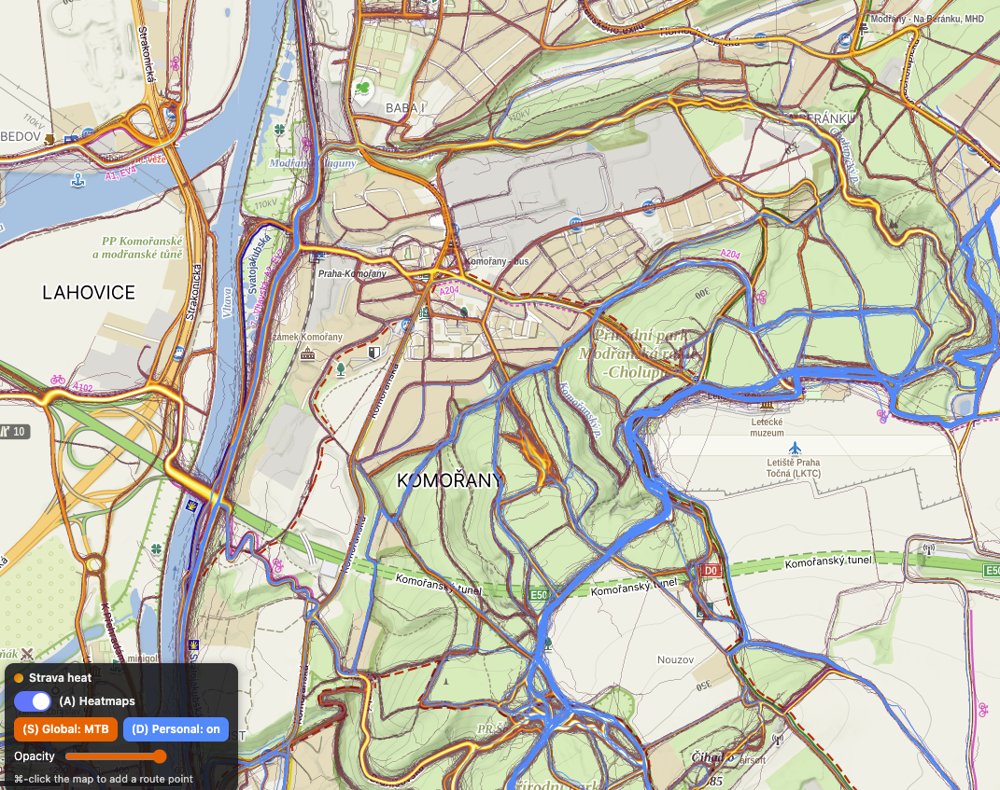
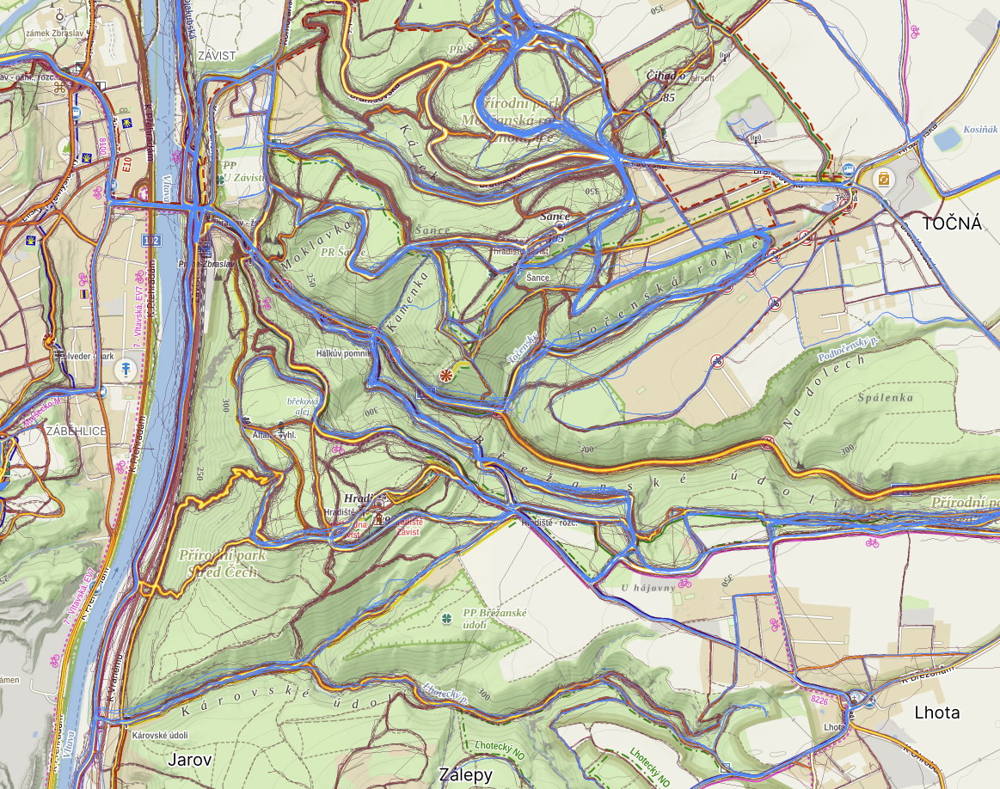
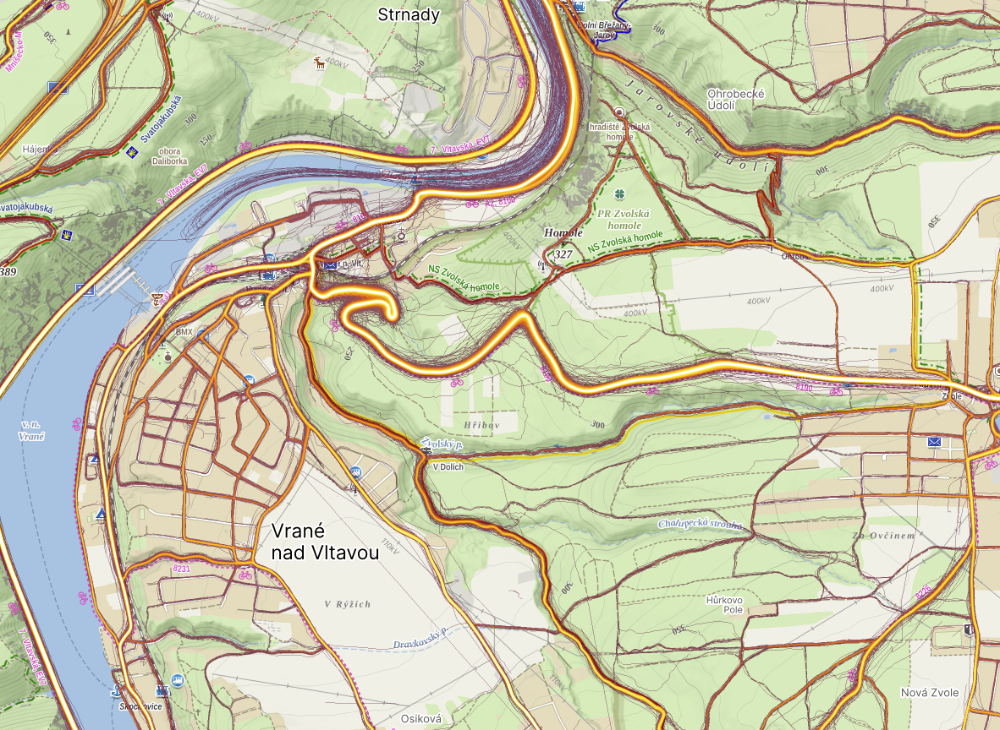

Strava heat, on the map that's actually good at planning.
Overlay your Strava global and personal heatmaps on Mapy.com — switch MTB / Ride / Run, and spot the roads and trails you've never explored yet.
Free · open source · no account needed to use the map

A map built for the outdoors — and for planning
Strava's base map is thin. Mapy.com's outdoor map shows what actually matters when you're choosing where to go.
See the terrain
Gradient shading and contours — tell at a glance if it's hilly, forested, or flat, before you commit.
Every path that exists
From motorways to the tiniest forest singletrack in the middle of nowhere — and you can tell which is which.
Fresh, real data
Road types, surfaces, and up-to-date closures — so your "shortcut" isn't a dead end or a highway.
Smarter planning
Sticks to real routes, ⌘/Ctrl-click to drop points fast, and respects MTB vs road riding.
Now with the best thing about Strava: everyone's heat
Combine Mapy.com's planning with Strava's crowd data. Switch the global heat between MTB / Ride / Run, then overlay your own heat in blue — and instantly see roads the locals know that you haven't ridden yet.


Install it, plan your next ride — for free
One click to add it to Chrome. If it saves you time, a 50 Kč coffee keeps it alive.
Works in Chrome, Brave, Edge & Opera · needs you logged in to Strava (Subscription for high-zoom & personal heat)